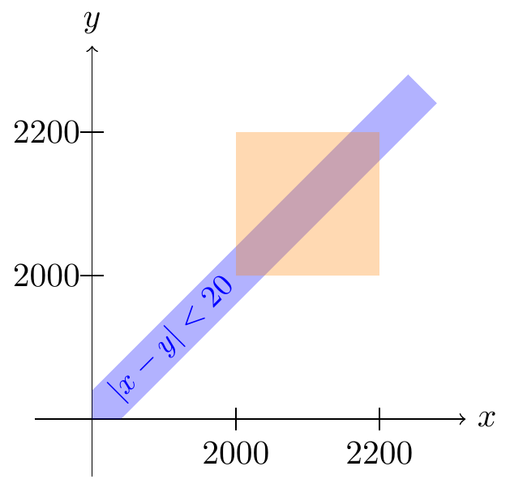

Lesson 41 Joint Continuous Distributions
Theory
Figure 41.1: Joint Distributions of Continuous Random Variables

Figure 41.2: Bird’s Eye View of the Event Above
That’s all there is to the theory. The only way to get good at this is to brush up on your multivariable calculus and do many, many examples.
Worked Examples
Example 41.1 (Joint Distribution of the First and Second Arrival Times) In San Luis Obispo, radioactive particles reach a Geiger counter according to a Poisson process at a rate of \(\lambda = 0.8\) particles per second. The time \(X\) that the first particle is detected and the time \(Y\) that the second particle is detected can be shown to have the joint p.d.f.: \[ f(x, y) = \begin{cases} 0.64 e^{-0.8 y} & 0 < x < y \\ 0 & \text{otherwise} \end{cases}. \] This p.d.f. is non-zero when \(0 < x < y\). The region where the p.d.f. is non-zero is known as the support of the distribution.
First, let’s note the following features of this p.d.f.
- The joint p.d.f. \(f(x, y) = 0\) when \(x > y\). This makes sense physically. By definition, it is impossible for the first particle to be detected after the second particle. So the probability of this must be 0.
- The joint p.d.f. depends on both \(x\) and \(y\). Although the expression \(0.64 e^{-0.8 y}\) only depends on \(y\), the support \(0 < x < y\) makes this a function of both \(x\) and \(y\).

Since the p.d.f. is zero, except on the support \(\{ y > x \}\) (shaded in red in the figure above), we can just integrate the p.d.f. on the overlap between the blue square and the red support. The figure helps us determine the limits of integration. As \(x\) ranges from 1 to 2, \(y\) needs to range from \(x\) to 2, if we want to cover the entire triangle where the square and support overlap. \[\begin{align*} P(1 < X < 2 \text{ and } 1 < Y < 2) &= \int_1^2 \int_x^2 0.64 e^{-0.8 y}\,dy\,dx \\ &\approx .0859. \end{align*}\]
After setting up the double integral, the integral was evaluated using Wolfram Alpha. You are encouraged to use software to evaluate integrals. However, software does not translate the real world problem into the integral you need to set up. That, for now, still has to be done by a human!
Sometimes, the geometry is simple enough that we can calculate the volume without integrals.
Example 41.2 (Actuarial Example) Two insurers provide bids on an insurance policy to a large company. The bids must be between 2000 and 2200. The company decides to accept the lower bid if the two bids differ by 20 or more. Otherwise, the company will consider the two bids further.
Suppose the two bids \(X\) and \(Y\) are equally likely to be any of the allowable bids. That is, their joint p.d.f. \[ f(x, y) = \begin{cases} c & 2000 < x, y < 2200 \\ 0 & \text{otherwise} \end{cases}, \] where \(c\) is a constant. What is the probability that the company considers the two bids further? Now, the company will consider the bids further if \(X\) is within 20 of \(Y\). That is, we want to calculate \(P(|X - Y| < 20)\). Shaded in blue above are all points \((x, y)\) where \(|x - y| < 20\). To calculate \(P(| X - Y | < 20)\), we need to calculate the volume under the p.d.f. above the blue event. Since the blue event is nothing and the red support. This region is an irregular hexagon.
But because the height of the p.d.f. is a constant \(c = \frac{1}{40000}\), this volume is just \[ (\text{area of hexagon}) \cdot (\text{height of surface}) = (\text{area of hexagon}) \cdot \frac{1}{40000}. \]
There are many ways to calculate the area of the hexagon, but the easiest is to take the area of the entire square, minus the area of the two triangles on either side. Each triangle has a base of 180 and a height of 180, so its area is \(\frac{1}{2} 180^2\). \[ (\text{area of hexagon}) = (\text{area of square}) - 2(\text{area of triangle}) = 200^2 - 2(\frac{1}{2} 180^2) = 7600. \]
So the probability is \[ P(|X - Y| < 20) = 7600 \cdot \frac{1}{40000} = .19. \]
The video below explains this problem.
In general, if the joint p.d.f. is constant on its support, as in Example 41.2, then the it is easier to calculate probabilities using geometry rather than calculus. However, if the joint p.d.f. is not constant, as in Example 41.1, then calculus is necessary.
Essential Practice
Alice and Bob meet for lunch every day at a random time between noon and 1 P.M. Bob always arrives after Alice, but otherwise, they are equally likely to arrive at any time. The joint p.d.f. of \(X\), the time Alice arrives (in minutes after 12 P.M.), and \(Y\), the time Bob arrives (in minutes after 12 P.M.), is given by \[ f(x, y) = \begin{cases} c & 0 \leq x < y \leq 60 \\ 0 & \text{otherwise} \end{cases}, \] where \(c\) is a constant.
- Sketch a birds-eye view of the joint p.d.f. Because the p.d.f. is constant, you should be able to calculate all probabilities using geometry, rather than integration.
- Determine the value of \(c\) that makes this a valid joint p.d.f.
- Calculate the probability that Bob arrives more than 25% later than Alice. That is, what is \(P(Y > 1.25 X)\)? (Sketch a picture of this region.)
Suppose \(X\) and \(Y\) are continuous random variables with joint p.d.f. \(f(x, y)\). What is \(P(X = Y)\) and why?
Additional Practice
- An ecologist selects a point inside a circular sampling region according to a uniform distribution.
Let \(X\) be the \(x\)-coordinate of the point selected and \(Y\) be the \(y\)-coordinate of the point selected. If
the circle is centered at \((0, 0)\) and has radius \(r\), then the joint pdf of \(X\) and \(Y\) is
\[ f(x, y) = \begin{cases} c & x^2 + y^2 \leq r^2 \\ 0 & \text{otherwise} \end{cases}. \]
- Determine the value of \(c\) that makes this a valid joint p.d.f.
- What is the probability that the selected point is within \(r/2\) of the center of the circular region? (Hint: Use geometry.)
- What is the probability that both \(X\) and \(Y\) differ from 0 by at most \(r/2\)?
- A company produces cans of mixed nuts containing almonds, cashews, and peanuts. Each can is exactly 1 lb, but the amount of each type of nut is random. The joint p.d.f. of \(X\), the amount of almonds, and \(Y\), the amount of cashews, is \[ f(x, y) = \begin{cases} 24xy & 0 \leq x \leq 1, 0 \leq y \leq 1, x + y \leq 1 \\ 0 & \textrm{otherwise} \end{cases}. \] Show that the probability there are more almonds than cashews is \(0.5\).